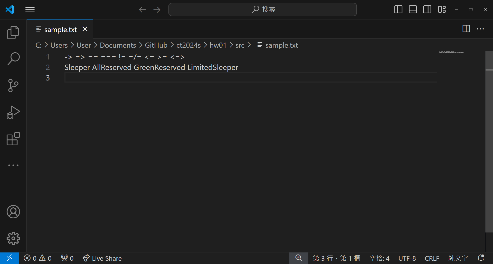
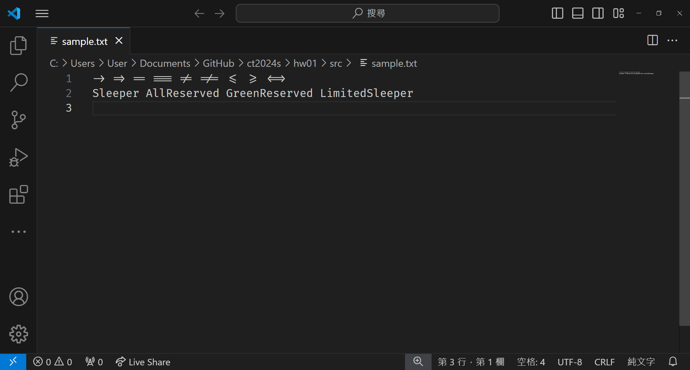
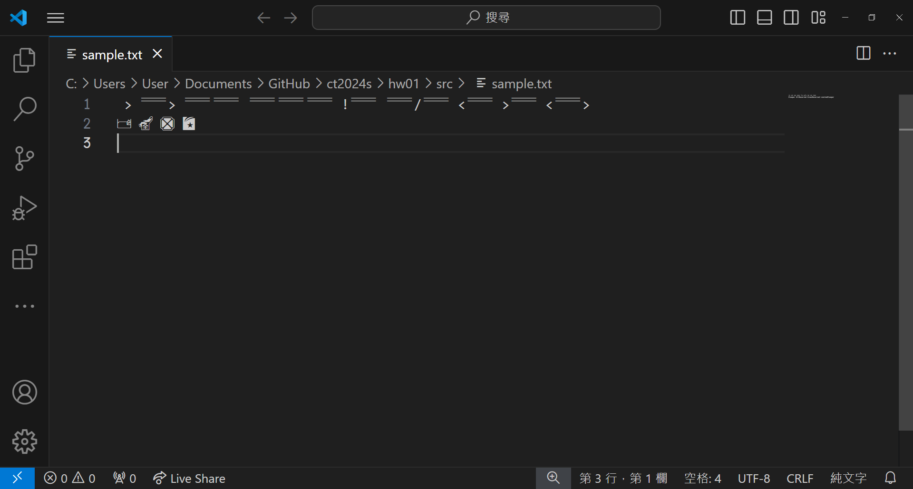

112-2 字體設計與文字編碼
作業一
心得
這次的作業很有趣，是讓我們自己更換VScode裡面的字體。可以打出一段字就直接變成符號的方式很特別！搞不好之後會有打出某一段字加上特殊符號就能將emoji打出的字體出現呢，現有比較相像的只有Adobe字體裡的「emoji one」，但那個是用選取的方式，似乎還沒有用打的出現emoji的字體出現，有點可惜。
字體是個很神奇的東西，可以把「文字」變得更加好玩、客製化，也可以賦予海報等設計物靈魂，一個字體就能把風格180度大轉變，在視覺溝通這一塊字體是不可或缺的存在！
截圖資料
原始圖片
Fira Code 字體示範
Fira Code: -> => == === != =/= <= >= <=
Fira Code: -> => == === != =/= <= >= <=
DiaPro 字體示範
DiaPro: Sleeper AllReserved GreenReserved LimitedSleeper
DiaPro: Sleeper AllReserved GreenReserved LimitedSleeper
